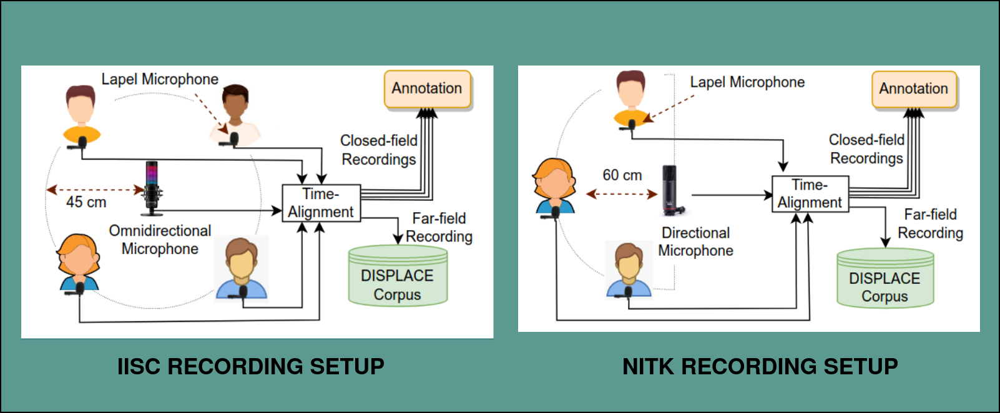

DISPLACE Corpus Overview
Audio Specifications
The recordings are single-channel wav files sampled at 16 kHz. Close-talking recordings were time-synchronized with far-field audio and normalized to [-1, 1] amplitude range.
Recording Setup

Each participant was given a lapel microphone to wear, while a shared far-field desktop microphone was positioned at the center of the table. Close-talking audio was recorded using lapel microphones connected to either an audio recorder or an Android phone. Far-field recordings were captured through either an omnidirectional or unidirectional microphone and stored in a laptop using Audacity software. Speakers were positioned in a circular or semi-circular arrangement, maintaining a distance of either 45 cm or 85 cm from the microphone. Close-talking speech was recorded for annotation purposes, while far-field audio data was used for the development and evaluation of the systems.